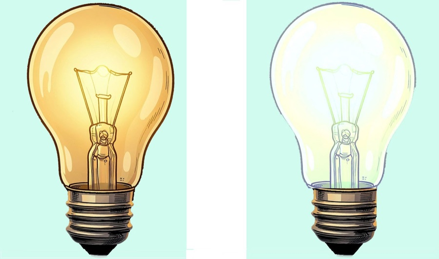
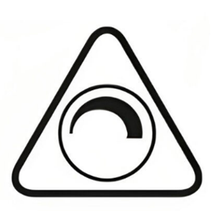

LED dimmen: So funktioniert es richtig
Analog oder digital, PWM oder DALI, Flackern oder flimmerfrei — was beim Dimmen von LEDs wirklich zählt, verständlich und praxisnah erklärt.

Ja, LEDs lassen sich dimmen — aber anders
LEDs kann man absolut dimmen. Allerdings funktioniert das nicht so einfach wie bei einer alten Glühbirne. Wenn man eine LED einfach nur an eine geringere Spannung anschließt, fängt sie irgendwann an zu flackern oder geht schlagartig aus.
Jede LED braucht ein kleines elektronisches Bauteil — das sogenannte Betriebsgerät — das sie mit der richtigen Spannung und dem richtigen Strom versorgt. Die Qualität dieses Bauteils entscheidet, ob die LED sauber und gleichmäßig dimmt oder ob es Probleme gibt.
Besonders bei sogenannten Retrofits — das sind LED-Leuchtmittel, die äußerlich wie eine klassische Glühbirne aussehen und in die gleiche Fassung passen — ist oft zu wenig Platz für ein hochwertiges Betriebsgerät. Die Folge: Kompromisse, die sich beim Dimmen durch Flackern oder Brummen bemerkbar machen.
Analog vs. Digital
Es gibt zwei grundsätzliche Verfahren, LEDs zu dimmen. Beide haben klare Stärken und Schwächen.
Analoges Dimmen
Beim analogen Dimmen wird die Stromstärke reduziert, die durch die LED fließt. Weniger Strom bedeutet weniger Licht — wie ein Wasserhahn, den man ein Stück zudreht.
- Vorteil: Elektronisch sehr einfach, absolut kein Flackern.
- Problem: Bei wenig Strom verändert sich die Lichtfarbe — warmweißes Licht kann plötzlich einen grünlichen oder bläulichen Stich bekommen. Außerdem gehen LEDs im unteren Bereich oft einfach schlagartig aus, statt sanft weiterzudimmen.
- Einsatzbereich: Taschenlampen, einfache LED-Streifen.
Digitales Dimmen (PWM)
Die modernste und am häufigsten genutzte Methode. Die LED wird nicht schwächer gemacht, sondern rasend schnell ein- und ausgeschaltet — viele hundert- oder tausendmal pro Sekunde. Die Abkürzung PWM steht für „Pulsweitenmodulation".
- So funktioniert es: Ist die LED pro Sekunde die Hälfte der Zeit an und die Hälfte aus, denkt unser Auge, sie leuchte mit halber Kraft — es ist einfach zu schnell, um die Pausen wahrzunehmen. Je länger die An-Phase im Verhältnis zur Aus-Phase, desto heller wirkt das Licht.
- Vorteil: Die LED behält immer ihre perfekte Lichtfarbe, weil sie in jeder An-Phase mit der vollen, optimalen Strommenge versorgt wird.
- Problem: Wenn die Elektronik billig ist und die LED weniger als 200-mal pro Sekunde schaltet, kann man das Flackern wahrnehmen — das kann zu Kopfschmerzen führen und zeigt sich als störende Streifen auf Smartphone-Videos.
- Einsatzbereich: Smart Home (Philips Hue etc.), Displays, hochwertige Leuchten.
Typische Probleme beim LED-Dimmen
Wenn Sie zu Hause LEDs dimmen wollen, stoßen Sie oft auf diese Hürden:
Das Mindestlast-Problem
Alte Dimmer wurden für Glühbirnen gebaut und brauchen oft eine Mindestleistung von 20 Watt oder mehr, um überhaupt zu funktionieren. Eine moderne LED verbraucht aber vielleicht nur 5 Watt — der Dimmer „denkt" also, es sei gar keine Lampe angeschlossen. Die Folge: wildes Flackern oder gar kein Licht.
Der tote Weg (Dead Travel)
Sie drehen am Dimmer, aber auf den ersten Zentimetern des Drehwegs passiert überhaupt nichts. Dann wird das Licht ganz am Ende plötzlich schlagartig hell — ein gleichmäßiges Hochdimmen ist so nicht möglich.
Glimmen im Aus-Zustand
Die LED leuchtet schwach, obwohl der Schalter auf „Aus" steht. Ursache: winzige Restströme, die noch durch die Leitungen fließen — so wenig, dass eine Glühbirne nicht reagiert hätte, aber genug für eine empfindliche LED.
Summen und Brummen
Günstige LED-Treiber (die kleinen Netzteile im Inneren) erzeugen beim Dimmen ein nerviges, hochfrequentes Summen oder Brummen — leise, aber in ruhigen Räumen deutlich hörbar.
Unterschiedliche Helligkeit
Mehrere Leuchten am selben Dimmer erscheinen unterschiedlich hell, weil die Betriebsgeräte leicht voneinander abweichen. Lösung: DALI — ein digitales Steuersystem, bei dem jede Leuchte exakt den gleichen Befehl erhält und deshalb absolut gleich reagiert.
Was passt zusammen?
| Eigenschaft | Analoges Dimmen | Digitales Dimmen (PWM) |
|---|---|---|
| Wie wird gedimmt? | Stromstärke wird verringert | LED wird extrem schnell an-/ausgeschaltet |
| Lichtqualität | Farbe kann sich leicht verändern | Lichtfarbe bleibt immer perfekt |
| Risiko | LED geht im unteren Bereich einfach aus | Kann bei billiger Technik flackern (Stroboskop-Effekt) |
| Einsatzbereich | Taschenlampen, einfache LED-Streifen | Smart Home, Displays, hochwertige Leuchten |

Immer auf „dimmbar" achten
Wenn Sie eine LED-Birne kaufen, achten Sie auf der Verpackung zwingend auf das Symbol oder den Hinweis „dimmbar" (dimmable).
Normale Standard-LEDs dürfen niemals an einen Dimmer angeschlossen werden — sie können sonst beschädigt werden oder kaputtgehen.
Dim-to-Warm: Glühlampen-Feeling mit LED
Wer eine Glühlampe gedimmt hat, kennt den Effekt: Je dunkler das Licht wurde, desto wärmer und gemütlicher — fast schon orangefarben — wurde der Farbton. Viele vermissen genau dieses Verhalten bei LEDs.
Die gute Nachricht: Spezielle „Dim-to-Warm"-LEDs können das nachempfinden. Der Trick: In der Leuchte sitzen weiße und warmtonige LEDs nebeneinander. Beim Dimmen wird das weiße Licht heruntergeregelt und das warme Licht übernimmt — genau wie bei der alten Glühlampe.
Die gesamte Steuerung steckt im Betriebsgerät, Sie brauchen also kein zusätzliches Zubehör. Besonders für Wohn- und Schlafbereiche ist diese Technik empfehlenswert — erhältlich in klassischer Birnenform und als LED-Band.
LED-Dimmen kompakt
Kann man LEDs dimmen?
Ja, LEDs lassen sich dimmen — vorausgesetzt, die LED ist als „dimmbar" gekennzeichnet und das Betriebsgerät ist dafür ausgelegt. Normale Standard-LEDs dürfen nicht an einen Dimmer angeschlossen werden, da sie sonst beschädigt werden können.
Was ist der Unterschied zwischen analogem und digitalem Dimmen?
Beim analogen Dimmen wird die Stromstärke reduziert — weniger Strom bedeutet weniger Licht, allerdings kann sich die Lichtfarbe verändern. Beim digitalen Dimmen (PWM) wird die LED hundert- oder tausendmal pro Sekunde ein- und ausgeschaltet. Die Lichtfarbe bleibt perfekt, aber billige Elektronik kann Flackern verursachen.
Warum flackert meine LED beim Dimmen?
Häufigste Ursache: Ein alter Glühbirnen-Dimmer mit zu hoher Mindestlast. Moderne LEDs verbrauchen oft nur 5–10 Watt, der Dimmer braucht aber 20+ Watt Mindestlast. Die Lösung ist ein LED-kompatibler Dimmer oder ein DALI-System.
Was bedeutet Dim-to-Warm?
Dim-to-Warm-LEDs ahmen das gemütliche Verhalten einer Glühlampe nach: Je weiter Sie herunterdimmen, desto wärmer und orangefarbener wird das Licht — genau wie früher. Im Inneren sitzen weiße und warmtonige LEDs nebeneinander, die beim Dimmen unterschiedlich angesteuert werden. Die Technik steckt im Betriebsgerät, Sie brauchen kein Zubehör. Besonders empfehlenswert für Wohn- und Schlafbereiche.
Was ist DALI und warum löst es Dimm-Probleme?
DALI (Digital Addressable Lighting Interface) ist ein digitales Steuersystem für Beleuchtung. Statt eines einfachen Dimmers sendet ein DALI-System präzise digitale Befehle an jede einzelne Leuchte. Der Vorteil: Alle Leuchten reagieren exakt gleich — Helligkeitsunterschiede zwischen verschiedenen Lampen am selben Dimmer gehören der Vergangenheit an.